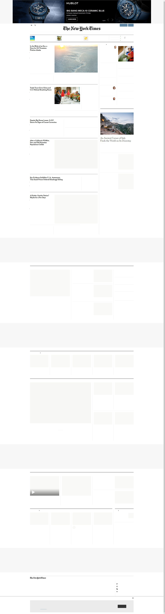

Medium uses browser cookies to give you the best possible experience. To make Medium work, we log user data and share it with processors. To use Medium, you must agree to our
Privacy Policy, including cookie policy.
I agree.HomepageBecome a memberSign inGet startedHomeThe New NewCultureTechStartupsSelfPoliticsDesignHealthPopularCollectionsMoreHow London Became a Playground for the Rich
This city is often hailed as globalism’s greatest success story. So why does it feel like it’s falling apart?
Henry WismayerBlockchain Could Save Legalized Weed. (Stop Rolling Your Eyes.)
As marijuana becomes legal across the U.S., small growers will need to innovate to survive
Benjamin Powers in
The New NewSix Years With a Distraction-Free iPhone
(and how to try your own low-stress experiment)
Jake Knapp in
Time DorksThe Bad Apple Theory
When an accident turns deadly, we search for someone to blame—but what does that solve?
Jessie Singer in
AccidentIt’s Time to Revisit the Infamous ‘Google Memo’
Yes, women are less interested in tech, and that’s why we need diversity more than ever
Emily J. SmithSee all featuredWelcome to Medium, where words matter.
We’ll deliver the best stories and ideas on the topics you care about most straight to your homepage, app, or inbox.
Get startedLearn moreHelpStatusWritersBlogCareersPrivacyTermsAbout